Проект реализован при поддержке Фонда содействия инновациям в рамках программы «Студенческий стартап» мероприятия «Платформа университетского технологического предпринимательства» федерального проекта «Технологии».
Проект реализован при поддержке Фонда содействия инновациям в рамках программы «Студенческий стартап» мероприятия «Платформа университетского технологического предпринимательства» федерального проекта «Технологии».
TRIBES - приключение о небольшом племени каменного века, которое исследует неизвестный мир, делает открытия, развивает поселение и вместе переживает угрозы. Мир не объясняет себя: следы, дым, кровь, звуки и силуэты в тумане дают неполную информацию, а каждое открытие остаётся в памяти племени.
TRIBES is an adventure about a small Stone Age tribe exploring an unknown world, making discoveries, growing a settlement and facing danger together. The world never explains itself: tracks, smoke, blood, sounds and silhouettes in the fog - and every discovery stays in the tribe's memory.
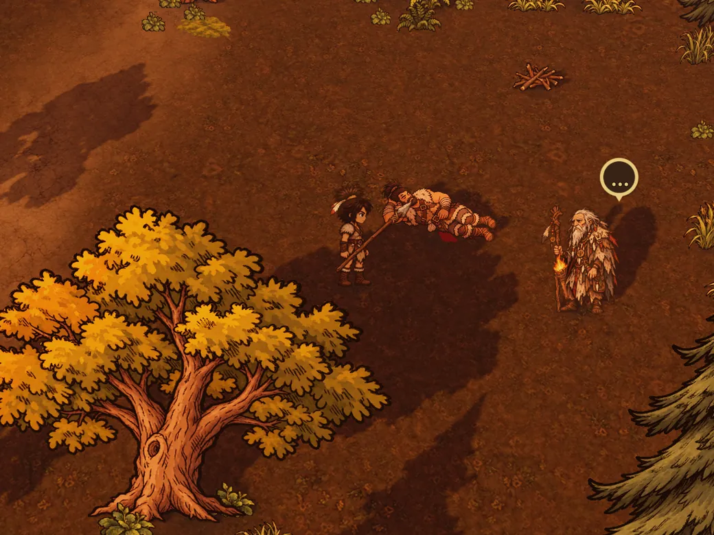
Открытие сильнее путевой точки. Вместо «мамонт 12 уровня» мир показывает, что здесь прошло что-то большое.
Discovery beats waypoints. Instead of a “level 12 mammoth”, the world shows that something huge passed by.
Нести раненого, тащить тушу, отвлечь зверя, передать факел - совместные действия открывают возможности.
Carry the wounded, haul a carcass, distract a beast, pass the torch - cooperation opens new options.
Упал в воду - погас факел - пришли волки. Ошибка рождает новую задачу, а не мгновенный проигрыш.
Fall in the river, lose your torch, here come the wolves. Mistakes create new problems, not instant defeat.
Прогрессия даёт новые способы действовать: топор - это поваленное дерево-мост, а не «+15% к сбору».
Progression brings new ways to act: an axe means a fallen tree bridge, not “+15% gathering”.
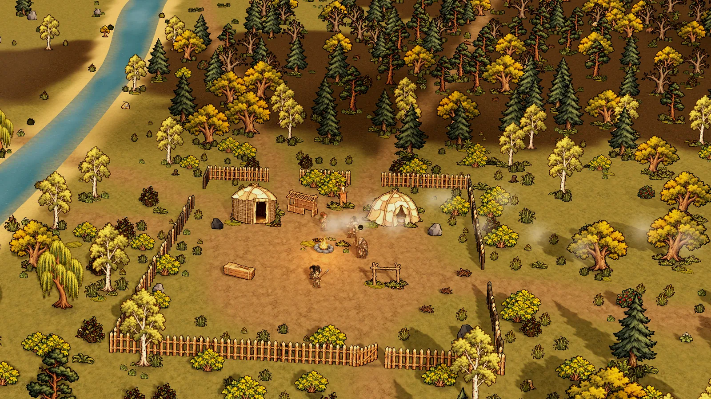
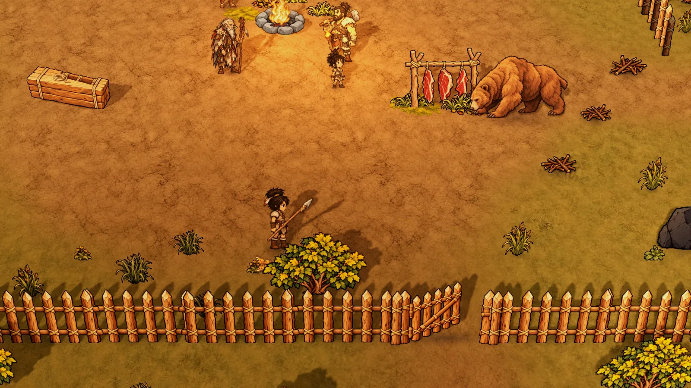
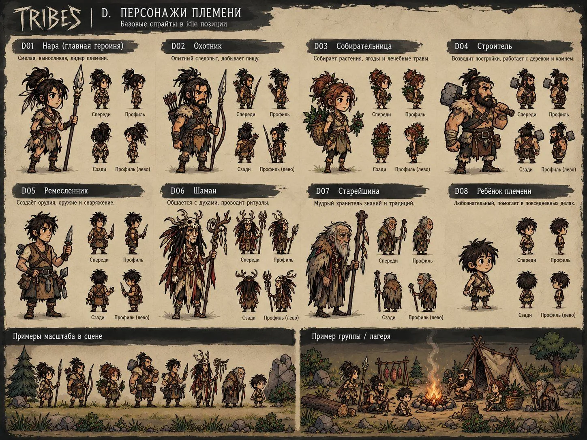
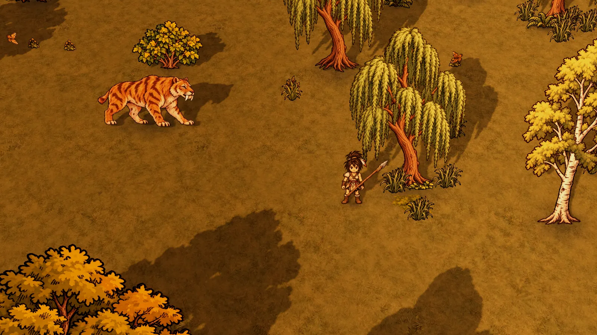
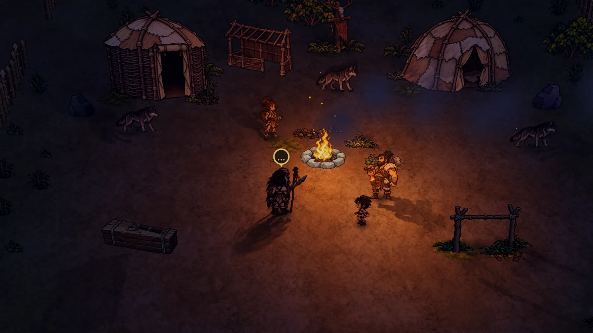
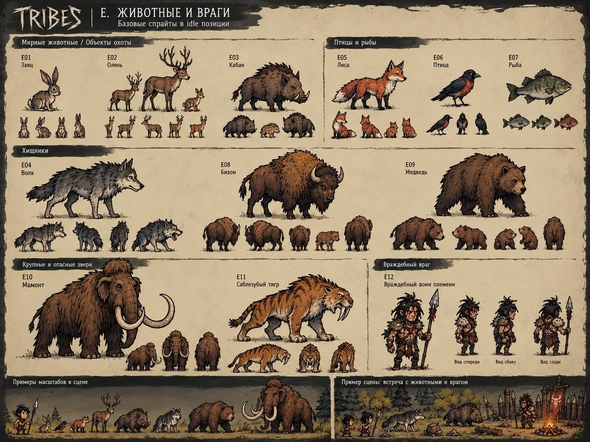
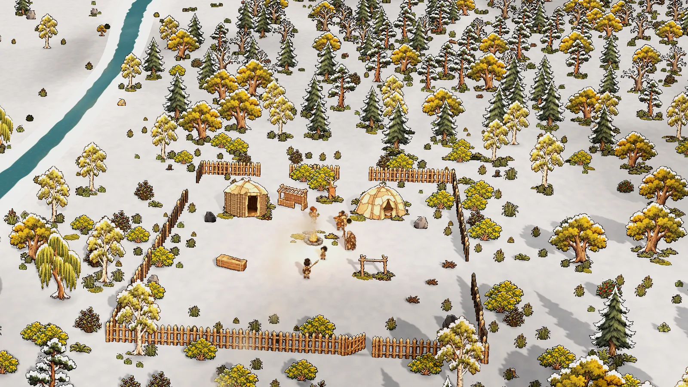
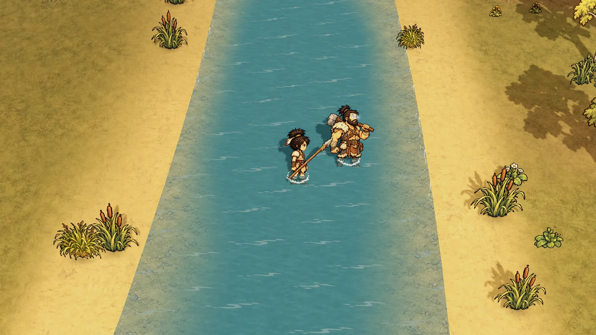
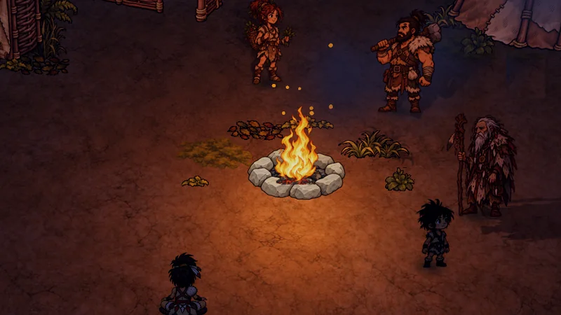
Играйте с друзьями или в одиночку с племенем NPC-спутников.
Play with friends or solo with NPC tribe companions.
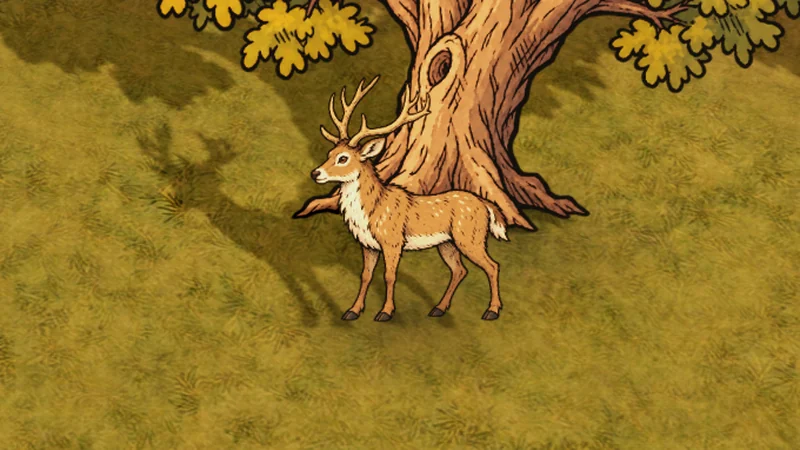
Олени слышат и чуют по ветру, кабан предупреждает перед рывком, волки охотятся стаей ночью. Есть мамонт и саблезубый хищник.
Deer hear and smell you downwind, boars warn before charging, wolves hunt in packs at night. Mammoths and saber-tooths roam.
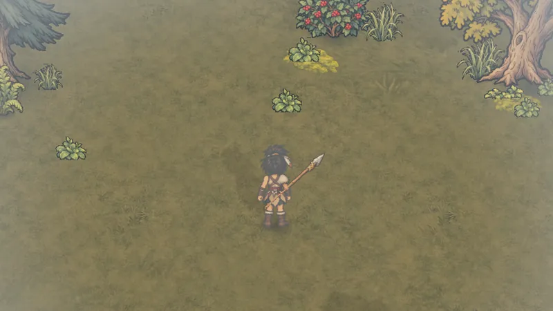
Дождь, снег, туман и ветер меняют охоту и выживание. Осень переходит в зиму.
Rain, snow, fog and wind change hunting and survival. Autumn turns into winter.
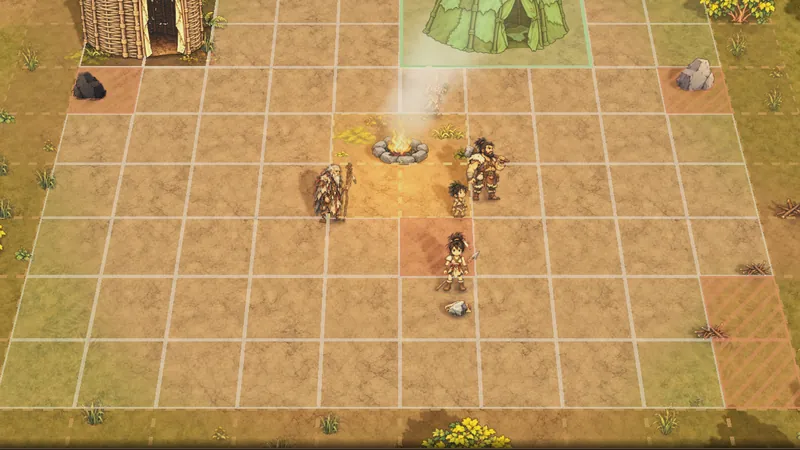
Склад, навес, сушилка, шалаш и верстак. Огонь, тепло и запасы решают, переживёт ли племя ночь.
Storage, shelter, drying rack, hut and workbench. Fire, warmth and food decide whether the tribe survives the night.
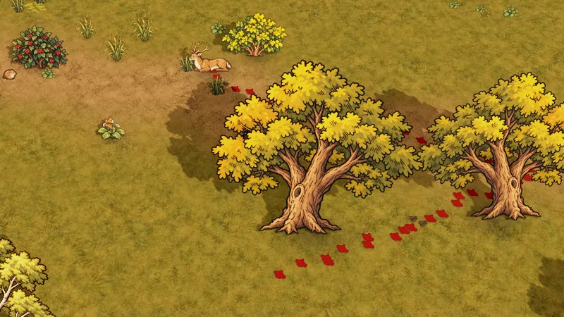
Незнакомое сначала изучают: растения, камни, звери, места. Знания открывают новые действия и ремёсла.
Study the unknown first - plants, stones, beasts, places. Knowledge unlocks new actions and crafts.
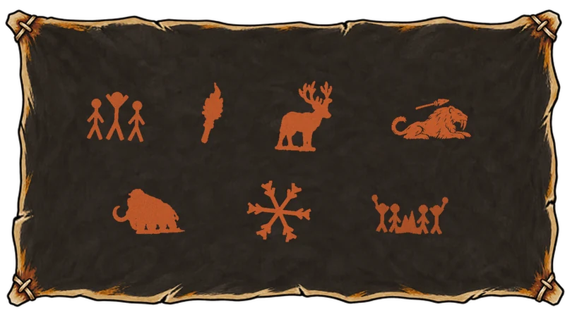
Охоты, потери и открытия складываются в собственную историю вашего племени.
Hunts, losses and discoveries become your tribe's own story.
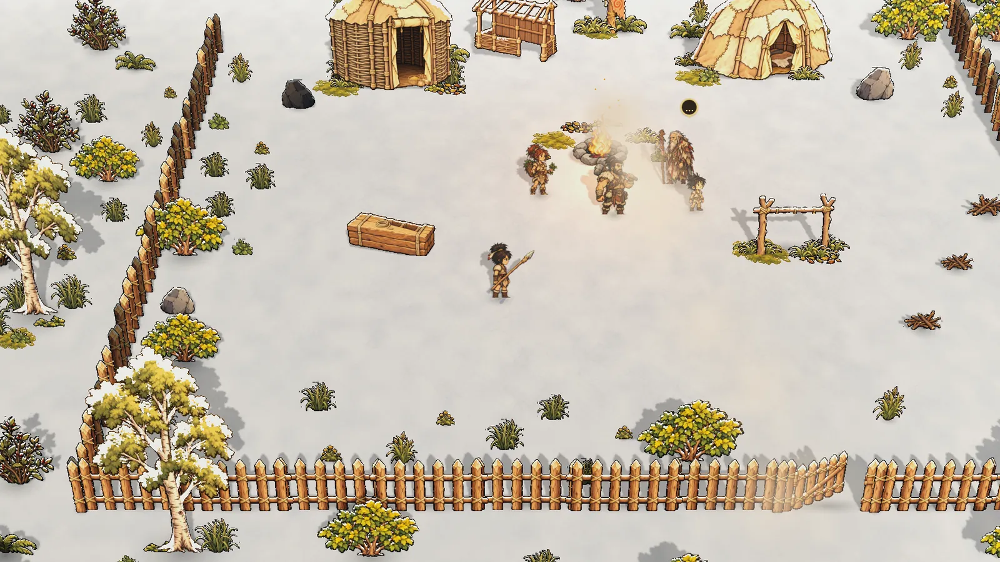
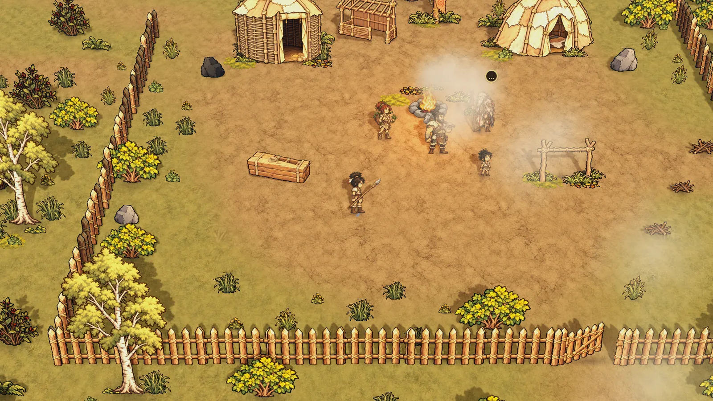
Осень · день 3Autumn · day 3 Зима · день 9Winter · day 9Один и тот же лагерь. Потяните границу, чтобы увидеть, как осень сменяется зимой.
The same camp. Drag the line to watch autumn turn into winter.
Сценарий «Первая зима»: девять дней, охота, лагерь, погода и сезоны.
The “First Winter” scenario: nine days, hunting, camp, weather and seasons.
Страница игры в Steam: можно добавить в желаемое.
Steam page goes live: add TRIBES to your wishlist.
Первая ночь племени, доступная всем.
The tribe's first night, open to everyone.
Открытые тесты с игроками и доработка по отзывам.
Open tests with players and polish based on feedback.
Выход в раннем доступе Steam.
Launch in Steam Early Access.
Небольшая независимая студия, которая делает игры о совместных приключениях - таких, после которых хочется рассказать друзьям, что произошло. Мы верим, что лучшие истории рождаются не из сценария, а из живого мира, где у каждого решения есть последствия.
A small independent studio making games about shared adventures - the kind you can't wait to retell to your friends. We believe the best stories aren't scripted: they grow out of a living world where every choice has consequences.
Мы открыты к сотрудничеству с издателями и рады рассказать об игре журналистам, блогерам и стримерам. В пресс-ките - всё, что нужно для материала: описание, ключевые даты и кадры в высоком разрешении.
We are open to working with publishers and happy to talk about the game with journalists, creators and streamers. The press kit has everything you need: a description, key dates and high-resolution screenshots.